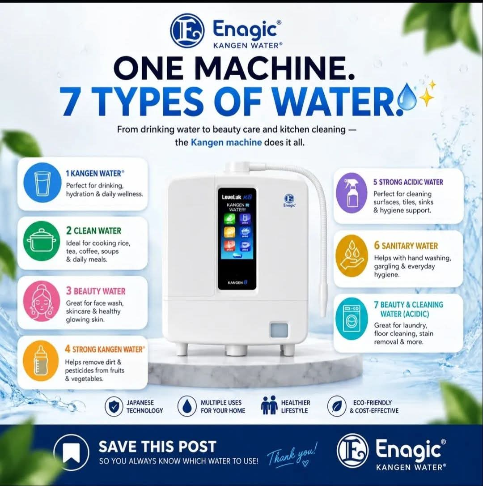
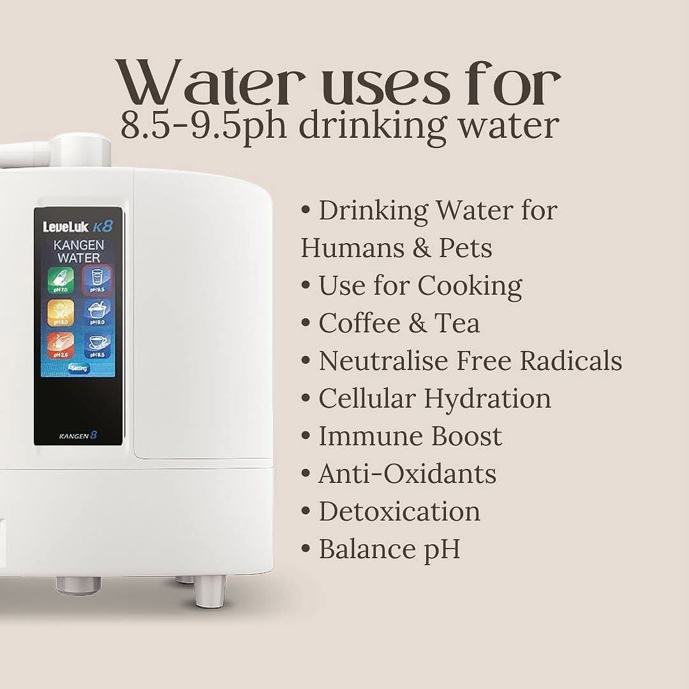
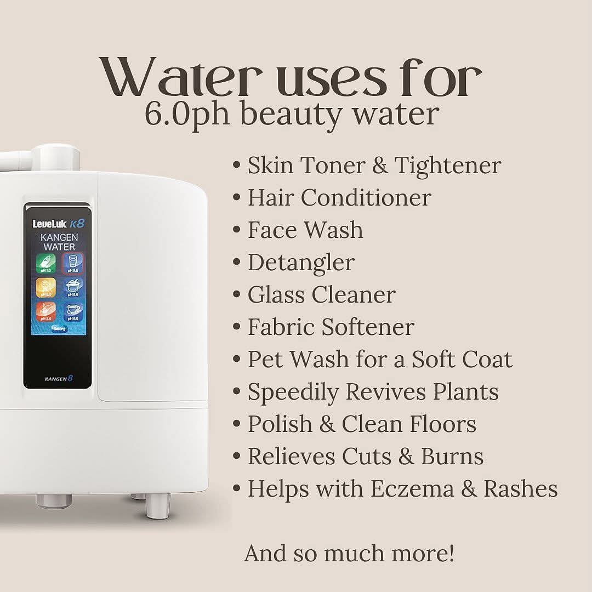
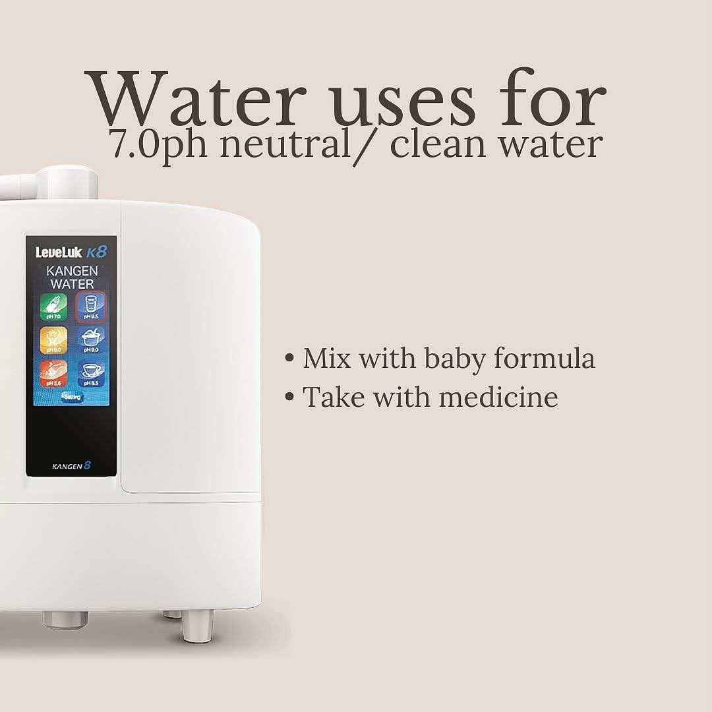
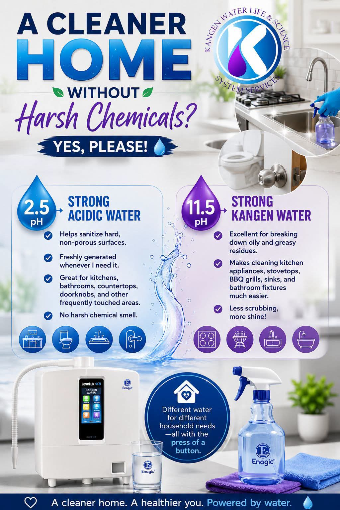
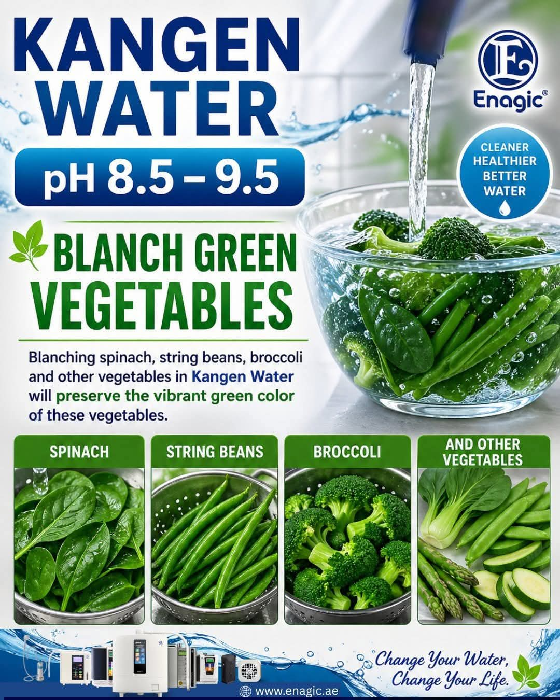

From drinking and beauty care to cooking and kitchen cleaning, the Kangen machine does it all. Each setting pours water at a different pH, tuned for a different job around the home.

Here’s the full range, from strong acidic all the way to strong alkaline.
Everyday alkaline drinking water for the whole family and pets.
Pure, neutral water — great for baby formula or taking with medicine.
Gentle weak-acidic water used as a natural skin toner and hair rinse.
Powerful alkaline water for washing produce and cutting through grease.
For sanitizing hard, non-porous surfaces around the kitchen and bathroom.
Handy for laundry, floors, glass, and general household cleaning tasks.

This is the water you’ll drink day to day. It’s also lovely for cooking, coffee and tea. Popular talking points among fans include:

Weak acidic beauty water is surprisingly versatile — from skincare to a natural cleaner:

Neutral water is filtered, clean water with a balanced pH. It’s the go-to when you want water with nothing added or altered:

The strong waters are where the machine really earns its keep around the house:

Blanching spinach, string beans, broccoli and other greens in Kangen Water helps preserve their vibrant color. Around the kitchen it’s also used for washing produce, cooking rice, and brewing coffee and tea.
Whether it’s daily drinking water, beauty care, or a cleaner kitchen, I can help you picture how it fits your home. Just ask.
Get in Touch